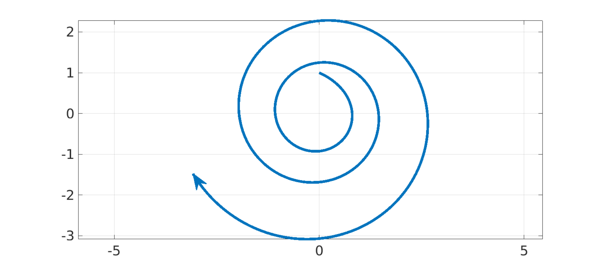

1. Discrete case: products of matrices
If $u^{(k+1)} = Au^{(k)}$ for a fixed matrix $A$, then $u^{(k)} = A^k u^{(0)}$, and hence $|u^{(k)}|\to 0$ as $k\to \infty$ if the eigenvalues of $A$ all lie in the open unit disk. If $A$ varies from step to step, however, then eigenvalues in the disk are not enough to ensure stability. For example, suppose $u^{(k+1)} = A_ku^{(k)}$ with $$ A_{\hbox{k even}} = \pmatrix{0 & 2\cr 0 & 0}, \quad A_{\hbox{k odd}} = \pmatrix{0 & 0\cr\ 2 & 0}. $$ Since the product of the two matrices is $$ \pmatrix{4 & 0\cr 0 & 0}, $$ the norm $|u^{(k)}|$ will in general diverge to $\infty$, even though the eigenvalues of both matrices are all zero. Rota and Strang consider such effects in their classic paper [5], which defines the joint spectral radius of a set of matrices.
An explanation is as follows. For a nonnormal matrix (i.e., with nonorthogonal eigenvectors), the significance of eigenvalues to the product $A^k$ is asymptotic as $k\to \infty$. Eigenvalues may have little to do with the behavior of powers $A^k$ for small $k$. Therefore if the matrices appearing in the product keep changing, we may never get into the asymptotic regime, and eigenvalues may have little significance. These matters are discussed at length in part IV of [7].
2. Continuous case: variable-coefficient ODEs
The continuous analogue, which is perhaps more classical, concerns linear systems of ODEs. For an autonomous system $u' = Au$, $u(t) = \exp(tA) u(0)$, and hence $|u|\to 0$ as $t\to \infty$ if the eigenvalues of $A$ are all in the open left half-plane. For a nonautonomous system $u' = A(t) u$, however, $|u|$ may diverge to $\infty$ even though all of the "frozen coefficient" matrices $A(t)$ are stable. This has been known for more than a century. As before, the explanation is that the significance of eigenvalues is asymptotic as $t\to \infty$, so favorable eigenvalues cannot ensure stability when $A$ varies with $t$.
According to a discussion on p. 288 of [1], this property of variable coefficient ODEs was first investigated by Lyapunov and Poincaré (whose theories also apply to nonlinear problems). Explicit examples seem to have been devised independently by various authors including Perron in 1930 [4], Vinograd in 1952 [8] (with generalizations by Dekker and Verwer), Kreiss in 1962 [2], and Lambert in 1980 [3]. No doubt this list is not complete.
3. Computed Example
For example, here is a nonnormal matrix with a double eigenvalue $-1$, $$ B = \pmatrix{-1 & m \cr \phantom{-}0 & -1} . $$ If the upper-right entry $m$ is bigger than $2$, the equation $u' = Bu$ will amplify certain initial vectors, such as $u = (0,1)^T$, before they eventually decay. Following Kreiss [2], suppose we now define a matrix $A(t)$ that consists of $B$ "rotated by angle $t$" in the plane: $$ A(t) = S(t) B S(-t), \qquad S = \pmatrix{\phantom{-}\cos(t) & \sin(t) \cr -\sin(t) & \cos(t)}, $$ that is, $$ A(t) = \pmatrix{-1 + mcs & mc^2 \cr -ms^2 & -1 -mcs } $$ where $s = \sin(t)$ and $c = \cos(t)$. Then $u' = A(t) u$ will have solutions that grow exponentially. Yet for each $t$, $A(t)$ has a double eigenvalue at $-1$.
We illustrate this in Chebfun, taking $m=2.2$. There doesn't seem to be a compact way to work with matrices in solving ODEs in Chebfun, we we use the explicit componentwise representation of the matrix as given above.
m = 2.2; B = [-1 m; 0 -1];
L = chebop(0,16); L.lbc = @(u,v) [u; v-1];
L.op = @(t,u,v) ...
[diff(u) - (-1+m*cos(t)*sin(t))*u - m*cos(t)^2*v ; ...
diff(v) - (-m*sin(t)^2)*u - (-1-m*cos(t)*sin(t))*v];
[u,v] = L\0;
arrowplot(u,v,'linewidth',5,'markersize',30,'ystretch',2)
grid on, axis equal

4. Transition to turbulence
In fluid mechanics, certain high Reynolds number laminar flows undergo transition to turbulence even though the eigenvalues suggest they should be stable. A simple model of this phenomenon can be based on mathematics much like the example above, with the rotation provided by nonlinearity rather than a variable coefficient. See Sec. 21 of [7], or for a one-page summary, [6].
5. References
-
D. J. Higham and L. N. Trefethen, Stiffness of ODEs, BIT 33 (1993), 285-303.
-
H.-O. Kreiss, Über die Stabilitätsdefinition für Differenzengleichungen die partielle Differenzentialgleichungen approximieren, BIT 2 (1962), 153-181.
-
J. D. Lambert, Stiffness, in Computational Techniques for Ordinary Differential Equations, eds. I. Gladwell and D. K. Sayers, Academic Press, 1980, 19-46.
-
O. Perron, Die Stabilitätsfrage bei Differentialgleichungen, Math. Zeit. 32 (1930), 703-728.
-
G.-C. Rota and W. G. Strang, A note on the joint spectral radius, Indag. Math. 22 (1960), 74-76.
-
L. N. Trefethen, Transition to turbulence: a one-page summary, November 1997,
https://people.maths.ox.ac.uk/trefethen/transitionsum.pdf. -
L. N. Trefethen and M. Embree, Spectra and Pseudospectra: The Behavior of Nonnormal Matrices and Operators, SIAM, 2005.
-
R. E. Vinograd, On a criterion of instability in the sense of Lyapunov of the solutions of a linear system of ordinary differential equations, Dokl. Akad. Nauk. SSSR 84 (1952), 201-204 (Russian).